★里程碑之一:第一个想到利用火箭飞天的人——明朝的万户。14世纪末期，明朝的士大夫万户把47个自制的火箭绑在椅子上，自己坐在椅子上，双手举着大风筝。他最先开始设想利用火箭的推力，飞上天空，然后利用风筝平稳着陆。不幸火箭爆炸，万户也为此献出了宝贵的生命。但他的行为却鼓舞和震撼了人们的内心。促使人们更努力的去钻研。
★里程碑之二:1970年4月24日21时31分，中国“东方红”一号飞向太空。这是中国发射的第一颗人造卫星。
★里程碑之三:1987年8月，中国返回式卫星为法国搭载试验装置。这是中国打入世界航天市场的首次尝试。
★里程碑之四:2003年10月15日，神舟五号载人飞船升空，搭载杨利伟升空；2005年10月12日，神舟六号搭载费俊龙，聂海胜两名航天员升空。2008年9月25日21点10分04秒988毫秒神舟七号搭载翟志刚，景海鹏，刘伯明三名航天员升空。
★里程碑之五:2007年10月24日18时05分，搭载着中国首颗探月卫星嫦娥一号的长征三号甲运载火箭在西昌卫星发射中心三号塔架点火成功发射。
★里程碑之六:2010年10月1日18时59分57秒，嫦娥一号卫星的姐妹星嫦娥二号，在西昌卫星发射中心发射升空，并获得了圆满成功。此次发射目的主要是实现下一步的月球软着陆进行部分关键技术试验，并对嫦娥三号着陆区进行了高精度成像。
航天发展
重要里程碑
20世纪航天发展
1956年2月:
著名科学家钱学森向党中央提出《建立中国国防航空工业的意见》。
1956年3月:
国务院制订《一九五六年至一九六七年科学技术发展远景规划纲要（草案）》，其中提出要在十二年内使中国喷气和火箭技术走上独立发展的道路。
1956年4月:
成立中华人民共和国航空工业委员会，统一领导中国的航空和火箭事业。聂荣臻任主任，黄克诚、赵尔陆任副主任。
1956年5月10日:
聂荣臻副总理向中央提出《建立中国导弹研究工作的初步意见》。五月二十六日，周恩来总理主持中央军委会议讨论同意，并责成航委负责组织导弹管理机构和研究机构。
1956年10月15日:
聂荣臻副总理就发展中国导弹事业向中央报告，提出对导弹的研究采取“自力更生为主，力争外援和利用外国已有的科学成果”的方针。十七日，中央批准了这个报告。
1958年1月:
国防部制订喷气与火箭技术十年（一九五八年至一九六七年）发展规划纲要。
苏联第一颗人造地球卫星发射之后，中国一些著名科学家建议开展中国卫星工程的研究工作。一些高等院校也开始进行有关学术活动。中国科学院由钱学森、赵九章等科学家负责拟订发展人造卫星的规划草案，代号为“五八一”任务，成立了“五八一小组”，议定建立三个设计院落。八月，第一设计院成立。十一月，迁往上海，改名为中国科学院上海机电设计院。
1958年4月:
开始兴建中国第一个运载火箭发射场。
1958年5月17日:
毛泽东主席在中共八大二次会议上指出：“我们也要搞人造卫星。”
1960年2月19日:
中国自行设计制造的试验型液体燃料探空火箭首次发射成功。九月，探空火箭发射成功。
1960年11月5日:
中国仿制的苏联“P—2”导弹首次发射试验获得成功。
1962年3月21日:
中国独立研制的第一枚中近程导弹发射试验失败。一九六三年一月，中国科学院成立星际航行委员会，由竺可桢、裴丽生、钱学森、赵九章等领导，研究制订星际航行长远规划。
1964年4月29日:
国防科委向中央报告，设想在一九七○年或一九七一年发射中国第一颗人造卫星。
1964年6月29日:
中国自行研制的中近程导弹再次发射试验，获得成功。
1964年7月19日:
成功地发射了第一枚生物火箭。
1965年:
中央专门委员会批准第七机械工业部制订的一九六五至一九七二年运载火箭发展规划。
中央专委责成中国科学院负责拟订卫星系列发展规划。
1965年10月:
中国科学院受国防科学技术委员会的委托，召开第一颗人造卫星方案论证会。
1966年6月30日:
周恩来总理视察酒泉运载火箭发射基地，观看中近程火箭发射试验，祝贺发射成功。
1966年10月27日:
导弹核武器发射试验成功。弹头精确命中目标，实现核爆炸。
1966年11月:
“长征一号”运载火箭和“东方红一号”人造卫星开始研制。
1966年12月26日:
中国研制的中程导弹首次飞行试验基本成功。
1967年:
“和平二号”固体燃料气象火箭试射成功。
1968年2月20日:
空间技术研究院成立。
1970年1月30日:
中远程导弹飞行试验首次成功。
1970年4月24日21点35分:
“东方红一号”人造卫星发射成功。这是中国发射的第一颗人造卫星。毛泽东主席等领导人于“五一”节在天安门城楼接见了卫星和运载火箭研制人员代表。
1971年3月3日:
中国发射了科学实验卫星“实践一号”。卫星在预定轨道上工作了八年。
1971年9月10日:
东风五号洲际导弹首次飞行试验基本成功。
1975年11月26日:
中国发射了一颗返回式人造卫星。卫星按预定计划于二十九日返回地面。
1979年1月7日:
远程导弹试验一种新的发射方式，获得成功。
1980年5月18日:
中国向太平洋预定海域成功地发射了远程运载火箭。中共中央、国务院、中央军委发电致贺。六月十日，在北京人民大会堂举行庆祝大会，邓小平、胡耀邦、李先念、陈云、彭真、徐向前等领导人出席，胡耀邦作重要讲话。
1981年9月20日:
中国用一枚风暴一号运载火箭发射了三颗科学实验卫星。
1982年10月12日:
潜艇水下发射导弹获得成功，回收舱准确地溅落在预定海域。中共中央军委发电致贺。
1984年4月8日:
中国第一颗地球静止轨道试验通信卫星发射成功。十六日，卫星成功地定点于东经一百二十五度赤道上空。中共中央、国务院、中央军委发电致贺。三十日，在北京人民大会堂举行庆祝大会。
1986年2月1日:
中国发射一颗实用通信广播卫星。二十日，卫星定点成功。这标志着中国已全面掌握运载火箭技术，卫星通信由试验阶段进入实用阶段。
1988年9月7日:
中国发射一颗试验性气象卫星“风云一号”。这是中国自行研制和发射的第一颗极地轨道气象卫星。
1988年12月25日:
中国科学院海南探空火箭发射场成功地发射了一枚“织女一号”火箭，至此，中国低纬度区第一次火箭探空试验圆满结束。这次为期两周的试验共发射了四枚火箭。
1990年4月7日21点30分:
中国自行研制的“长征三号”运载火箭在西昌卫星发射中心，把美国制造的亚洲1号通信卫星送入预定的轨道，首次取得了为国外用户发射卫星的圆满成功。
1990年7月16日9点40分:
中国新研制的大推力运载火箭——长征二号捆绑式运载火箭在西昌卫星发射中心发射成功，将模拟卫星送入了预定轨道。这枚火箭是由中国新建的大型航天发射设施发射升空的，同时还为巴基斯坦搭载发射了一颗小型科学试验卫星。
1991年1月22日下午18点23分:
中国第一枚一百二十公里高空低纬度探空火箭——“织女三号”在中国科学院海南探空发射场发射试验成功。一九九四年二月二十二日，中国第一座海事卫星地面站通过验收。它的建成填补了中国高科技的一项空白。
1998年5月2日:
中国自行研制生产的“长二丙”改进型运载火箭在太原卫星发射中心发射成功。这标志着中国具有参与国际中低轨道商业发射市场竞争力。
载人飞船
1999年11月20日，中国第一艘无人试验飞船“神舟”一号飞船在酒泉起飞，21小时后在内蒙古中部回收场成功着陆，圆满完成“处女之行”。这次飞行成功为中国载人飞船上天打下非常坚实的基础。
2003年，“神舟五号”搭载首位中国宇航员杨利伟前往太空；
2008年，“神舟七号”搭载三名宇航员进入太空，翟志刚完成首次出舱行走。
神舟一号 1999年11月20日 第一次测试飞行，成功实现天地往返。
神舟二号 2001年01月09日 第一艘正样无人飞船。飞行试验的主要目的是对工程各系统从发射到运行、返回、留轨的全过程进行考核， 检验各技术方案的正确性与匹配性，取得与载人飞行有关的科学数据和实验数据。
神舟三号 2002年03月25日 飞行试验的主要目的是考核火箭逃逸功能、控制系统冗余、飞船应急救生、 自主应急返回、人工控制等功能，这次任务载有模拟宇航员。
神舟四号 2002年12月29日 无人状态下全面考核的一次飞行试验，主要目的是确保宇航员绝对安全， 进一步完善和考核火箭、飞船、测控系统的可靠性。
神舟五号 2003年10月15日 首次载人飞行，承载的宇航员是杨利伟，成功围绕地球十四圈。
神舟六号 2005年10月12日 首次进行多人多天的航天飞行，承载的宇航员是费俊龙和聂海胜。
神舟七号 2008年09月25日 首次承载三名宇航员进入太空，承载的宇航员是翟志刚、刘伯明和景海鹏， 成功进行出舱活动（又称太空行走）。
神舟八号 2011年11月01日 由改进型“长征二号”F遥八火箭顺利发射升空。2011年11月3日凌晨，与组合天宫一号成功实施首次交会对接任务，成为中国空间实验室的一部分。
神舟九号 2012年6月16日下午 首次载人交会对接任务3名航天员进入太空，景海鹏、刘旺和刘洋（中国首位女航天员）。6月18日下午，神舟九号成功与天宫一号目标飞行器实现自动交会对接。6月24日，航天员刘旺操作飞船顺利完成于天宫一号的手控交会对接。标志着中国完全掌握了载人交会对接技术。
神舟十号 2013年6月11日17时38分搭载三位航天员飞向太空， 将在轨飞行15天，并首次开展我国航天员太空授课活动。飞行乘组由男航天员聂海胜、张晓光和女航天员王亚平组成，聂海胜担任指令长。
火箭发展
新中国建立后，领袖层明显地感觉到外来威胁的存在。因此国防科学技术的发展成为重要的议题。新中国的航天史始于1956年。那一年2月，钱学森先生向中央提出了《建立中国国防航空工业的意见》。3月，国务院制订《1956年至1967年科学技术发展远景规划纲要（草案）》，其中提出要在12年内使中国喷气和火箭技术走上独立发展的道路。1956年4月，航天工业委员会成立。1956年5月10日，聂荣臻副总理向中央提出《建立中国导弹研究工作的初步意见》。5月26日，周恩来总理主持中央军委会议讨论同意，并责成航委负责组织导弹管理机构和研究机构。1956年10月8日，钱学森又受命组建了中国第一个火箭、导弹研究——国防部第五研究院（即现在的运载火箭研究院）。
1957年12月24日，一辆从莫斯科出发的专列抵达北京。车上除102名苏联火箭技术人员外，还有一份苏联“还给”中国的厚礼--两发P-1近程地地导弹。在史书上记载着200年前，火箭故乡的中国康熙皇帝曾送给俄国沙皇两箱古代火箭；200年后苏联“老大哥”又将两枚现代火箭送给了中国这位“小弟弟”。1958年4月，开始兴建中国第一个运载火箭发射场。
1958年5月17日，毛泽东在中共八大二次会议上发出“我们也要搞人造卫星”的号召，掀起中国航天事业的第一个高潮。10月20日，在苏联专家的帮助下，在酒泉建立了中国第一个卫星发射场。到了1960年，正当中国仿制P-2导弹的工作进入最后阶段时，中苏之间关于意识形态领域的大论战开始了，被惹恼的赫鲁晓夫下令全部停止根据先前的协议正在进行的对中国的援助。
中国的火箭，的的确确是逼出来的
航天发展之初
就在苏联撤走专家17天后的1960年9月10日，中国第一次在自己的国土上，用苏联专家认为会爆炸的中国自己生产的国产燃料，成功地发射了一枚苏制P-2导弹。
而这时中国人按照苏联提供的图纸仿制出来的导弹，也开始进入最后的组装。人们把新中国航天人自己制造出来的第一枚导弹命名为“东风一号”。
1960年11月5日上午9时，中国第一枚仿制的火箭“东风一号”点火了。第一次引进弹发射成功，第一发仿制弹也发射成功，“东风一号”成为压倒西风的前锋。
1962年3月21日上午9时5分53秒，东风二号在众望所归中点火升空。但是发射失败。1964年6月29日，“东风二号”又开始发射试验。这次“东风二号”连续三发都取得了成功。它标志着中国从此拥有了可以远程打击的导弹盾牌。
有人说，当初年轻的共和国在一片废墟上迅速挺立，靠的是两根支柱：一根是大庆油田，一根就是“两弹一星”。邓小平说：“如果60年代以来，中国没有原子弹、氢弹，没有发射卫星，中国就不能叫有重要影响的大国，就没有现在这样的国际地位。这些东西反映一个民族的能力，也是一个民族、一个国家兴旺发达的标志。”
1964年，中国的科学家们起草了《关于人造卫星方案的报告》。4月29日，国防科向中央报告，设想在1970年或1971年发射中国第一颗人造卫星。同年6月29日中国自行研制的中近程火箭再次发射试验，获得成功。7月19日，成功地发射了第一枚生物火箭。1966年10月27日，导弹核武器发射试验成功。弹头精确命中目标，实现核爆炸。同年年11月，“长征一号”运载火箭和“东方红”一号人造卫星开始研制。12月26日，中国研制的中程火箭首次飞行试验基本成功。1970年4月24日21时31分，中国自行研制的“东方红”一号人造地球卫星飞向太空。这是中国发射的第一颗人造卫星。中国成为世界上第五个能独立研制发射人造地球卫星的国家。这是中国航天史上的第一个里程碑。
1968年2月20日，中国空间技术研究院宣告成立，首任院长钱学森。
1971年3月3日，中国发射了科学实验卫星“实践一号”。卫星在预定轨道上工作了八年。9月10日，洲际火箭首次飞行试验基本成功。
1974年11月5日，“长征二号”首次发射时由于火箭上一根控制信号导线在巨大的震动中折断，火箭在起飞20秒以后姿态失稳。当看到自己创造的似乎有生命的心血结晶在一瞬间变为烈火中纷纷坠落的残骸时，许多人几乎不相信眼前的现实，航天人流下了从不轻易流的眼泪。距第一次“长征二号”空中爆炸近一年后的1975年10月16日，第二枚“长征二号”和卫星送达酒泉卫星发射中心。当11月26日11时27分52秒，火箭再次喷出火焰时，这次火箭卫星不负众望。卫星发射三天后的11月29日10时53分，返回舱像一个听话的孩子按照原计划与星体分离。这是中国航天史上的第二个里程碑，同时，还创造了一个世界航天史的奇迹：首次发射返回式卫星即回收成功。苏联是在秘而不宣地发射了几颗卫星后才掌握了回收技术；美国虽是大大方方，却是发射到第13颗卫星时才掌握该项技术。美国宇航局局长1979年来华访问时，参观了当年研制卫星的部分实验室和工厂。参观结束，他问那些带他参观的中国人：“你们领我看的这些东西是真的吗？”
中国在发射了第一颗卫星之后不久，开始正式策划卫星通信工程。后来称为“331”工程。
这时人们发现手中现有的火箭派不上用场，必须研制新型能飞得更高更远的运载工具。1977年12月28日，七机部下发了《关于改变“三三一工程”运载火箭名称的通知》，将火箭的名称正式确定为“长征三号”。
“东方红二号”通信卫星又是一个地地道道的中国货。与14年前上天的“东方红一号”相比，用途已从政治转为实用，它可以传送电视、电话、广播、数据等多种信息，作用可以覆盖中国全部领土领海。与它同时诞生的还有大量的地面试验设备。
1983年一切准备就绪。一个庞大的试验队护送新的火箭和新的卫星来到新的发射场。经过3个多月的测试准备，1984年1月29日，新的“长征三号”火箭托举着东方红二号卫星开始发射。
火箭起飞一切正常，顺利飞到四百多公里的高空。但意外出现了。故障原因很快被找到并对方案进行了修改。就在这个时候，接到了上级领导的指示，整个发射队伍不撤回，尽快发射第二发。这是中国航天史第一次也是惟一的一次大胆的决定。
4月8日，第二枚长三火箭点火升空，顺利将卫星送入预定的椭圆轨道。但卫星进入椭圆轨道仅是成功了第一步，还要利用星上的发动机把卫星一步一步推到距地球近36000公里的静止轨道上。
1984年4月16日18时27分57秒，卫星定点在125度的赤道上空，所有仪器工作正常。中国人在地球之外36000千米的高空放上了自己的第一颗通信卫星。
1986年2月1日，中国再次发射一颗实用通信广播卫星。20日，卫星定点成功。这标志着中国已全面掌握运载火箭技术，卫星通信由试验阶段进入实用阶段。
太空发展时代
80年代，基于卫星回收技术上的空间试验成为各国热点。太空越来越成为一个巨大的市场。1985年10月，中国政府宣布，长征系列运载火箭将投入国际市场，承揽国内外用户的商业发射任务。中国的航天事业从此进入了一个参与国际航天市场竞争，与国际太空发展同步的时代。
1988年底到1990年1月间，在国际市场上13个招标的卫星发射服务中，美国中标3颗，阿里亚娜中标9颗，而中国仅中标1颗。
机遇有时会不期而至。1986年，被称作世界航天史上的黑色灾难年。继1月28日发生了震惊世界的美国挑战者号航天飞机机毁人亡事件后。紧接着一系列的事故让世界火箭发射市场几乎瘫痪。一时间，世界上几乎所有的卫星厂家和用户都着急起来。天上运行的卫星寿命将尽，地上准备好的卫星排成长队等待发射，而阿里安火箭发射的日期尚不能确定。卫星的制造商们想起了一年前曾被他们冷遇的中国火箭。
航天事业起步
其实在此之前，中国的对外发射服务已经紧锣密鼓地开展起来。
这一年的3至4月期间，航天工业部代表团在美国进行了大规模的长征系列火箭的推销活动。在十几天旋风般日程安排中，先后与十几家宇航公司进行了接触，连续进行了多达24场的中国火箭宣讲。
1986年，在美国的著名的麦道公司的谈判室里，两名中方专家在舌战13名美国技术专家后，终于让美国人认识到中国人手中有真家伙，从此美方对中方的态度发生了180度的大转变，认真和尊敬起来。
1987年8月，在酒泉卫星发射中心发射的第九颗返回式卫星，为法国马特拉公司搭载了两个微重力试验装置。卫星成功回收后，该公司的相关试验取得圆满成功，这是中国航天界打入世界航天市场的第一次尝试。1990年4月7日，中国自行研制的“长征”三号运载火箭在西昌卫星发射中心，把美国制造的亚洲1号通信卫星送入预定的轨道，首次为国外用户发射卫星取得圆满成功。1990年7月16日9时40分，中国新研制的大推力运载火箭“长征二号”捆绑式运载火箭在西昌卫星发射中心发射成功。1991年1月22日下午18时23分，中国第一枚120公里高空低纬度探空火箭“织女三号”在中国科学院海南探空发射场发射试验成功。1992年10月6日，发射瑞典科学卫星，以“一箭双星”的形式将瑞典“弗利亚”卫星送入预定轨道，圆满履行了中国发射外星的第一个合同。1994年2月22日，中国第一座海事卫星地面站通过验收。它的建成填补了中国高科技的一项空白。
1998年5月2日，中国自行研制生产的“长二丙”改进型运载火箭在太原卫星发射中心发射成功。这标志着中国具有参与国际中低轨道商业发射市场竞争力。
迄今为止，长征系列火箭已成功把多种试验卫星、科学卫星、地球观测卫星、气象卫星和通讯卫星等送入太空，为巴基斯坦、瑞典、菲律宾、美国、澳大利亚等国家提供商业发射服务。世界上最大的商业卫星供应商美国休斯公司已与中国长城工业总公司签订了长期合作协议。
新航天时代
火箭可以运载并发射卫星上天，而卫星又可以安全返回，这两项成果的取得为载人航天打下了技术基础。除了显而易见的经济效益，载人航天的研制涉及到天文、医学、空气动力学等数十个学科领域。它的成熟将体现一个国家的综合科技水平，关乎一个国家在太空时代的生死存亡。
人类载人航天已有42年历史（1961前苏联实现世界首次载人航天），中国载人航天工程在1992年正式启动后仅用7年时间就突破了航天最高技术。
1999年11月20日6时30分7秒，中国第一艘试验飞船“神舟”一号首发成功，中国成为继美、俄之后世界上第三个拥有载人航天技术的国家。在完成了21个小时的空间科学试验后，于21日3时41分成功着陆。“神舟”号试验飞船的成功发射和回收，成为中国航天史上的又一里程碑。成功的日期1999年11月21日，离这一年结束的日子只有一个月零9天。在7年时间里每天数着日历倒计时过日子的航天人中，许多人只想好好地睡上一觉。但就是这样简单的愿望对很多人来讲，也是一个难以实现的奢望。在新的战鼓声中，“神舟二号”又开始起步了。正在驾驶隆隆天车挺进太空的中国航天人，必须为一个民族的理想去争分夺秒！
不久，第二艘飞船“神舟二号”被制造出来，它的性能比“神舟一号”更加先进，保证安全与维持生命系统的设备安装得也更加充分。
21世纪航天发展
2001年1月10日在酒泉卫星发射中心发射升空，飞行7天后成功返回地面。这是中国第一艘正样无人飞船。飞船上进行了微重力环境下的空间生命科学、空间材料、空间天文和物理等领域的实验，各种仪器设备性能稳定，工作正常，取得了大量数据。与“神舟”一号飞船相比，“神舟”二号飞船的系统结构有了新的扩展，技术性能有了新的提高，飞船技术状态与载人飞船基本一致。
紧接着神舟三号飞船于2002年3月25日发射。飞船搭载了人体代谢模拟装置、拟人生理信号设备以及形体假人，能够定量模拟航天员呼吸和血液循环的重要生理活动参数。“神舟”三号轨道舱在太空留轨运行180多天，成功进行了一系列空间科学实验。
2002年12月30日，“神舟”四号飞船的升空，是中国载人航天的最后一次预演，是载人航天工程实施以来技术要求最高、参试系统最全、难度最大的一次飞行试验，还面临载人航天发射以来最为严峻的考验：发射场有史以来罕见的严寒，最低气温接近-30℃，超过低温发射条件近10℃，且飞船发射已进入不可逆状态。“神舟”四号飞船最后的成功发射，标志着中国载人航天工程经受住了无人状态下最全面的飞行试验考验，创造了中国航天史上低温发射的新纪录，也创造了世界航天史上火箭低温发射的奇迹。中国航天专家梁思礼院士表示，虽然“神舟”飞船的研制、发射比美、俄晚一些，但中国研制飞船的起点更高。“神舟”飞船的轨道舱既能进行留轨对地观测，又能作为未来空间交会对接的一个飞行器，是今后天地往返运输的优良工具。
公元2003年10月15日是一个不寻常的日子，9时整，杨利伟乘坐的“神舟”五号飞船在震天撼地的轰鸣中腾空而起。全世界的人们在这一天都看到中国人杨利伟在太空中飞翔。从这一天起，在浩渺的宇宙间飘动的旗帜中开始有了中国的五星红旗。那艘承载全民族希望的“神奇之舟”划开了中国一个崭新的航天时代。
公元2003年10月16日清晨6时23分，中国的“神舟五号”飞船在起飞21小时后，顺利降落在内蒙古空旷的草原上。太空中没有中国人足迹的历史到此结束。
飞天已从敦煌壁画中走了出来。
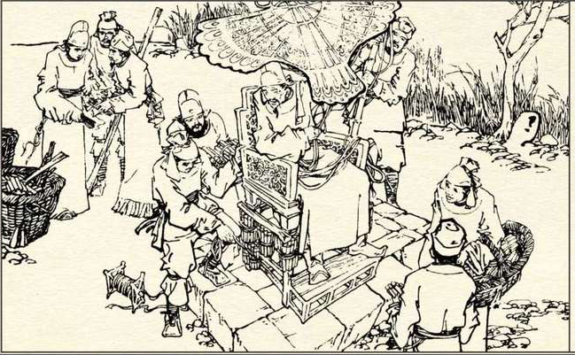
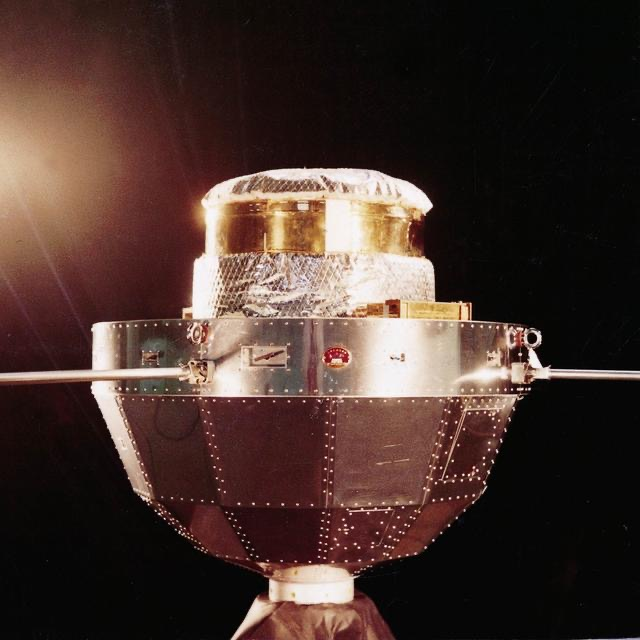
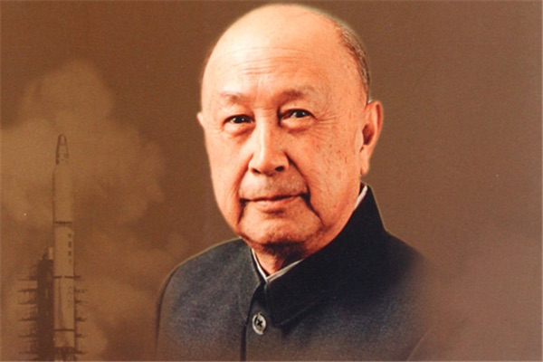
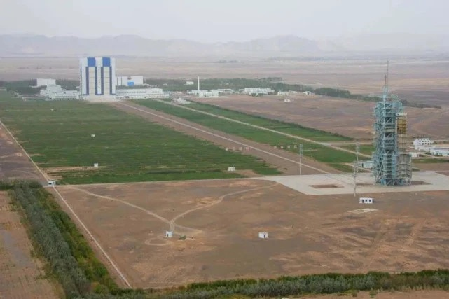
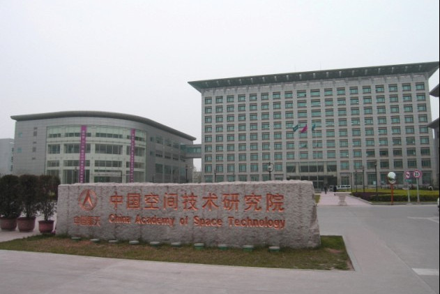
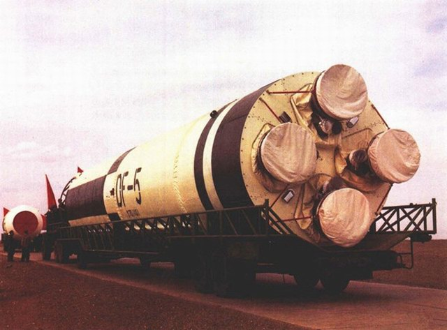
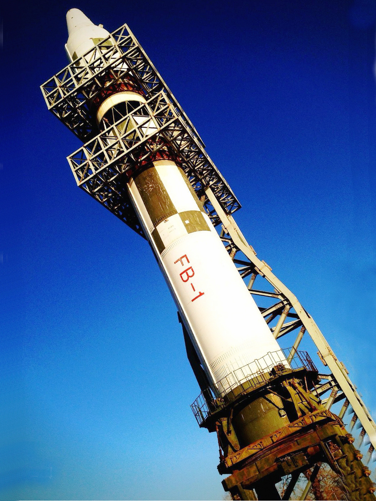
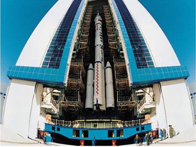
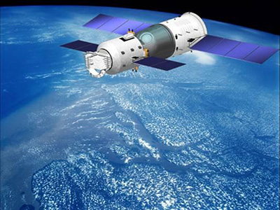
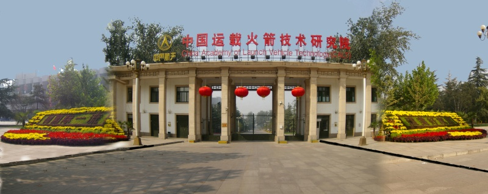

 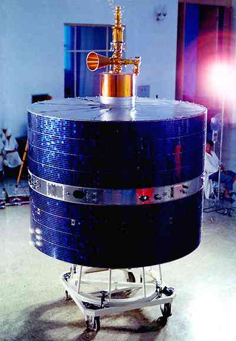
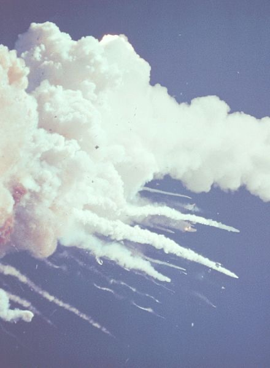
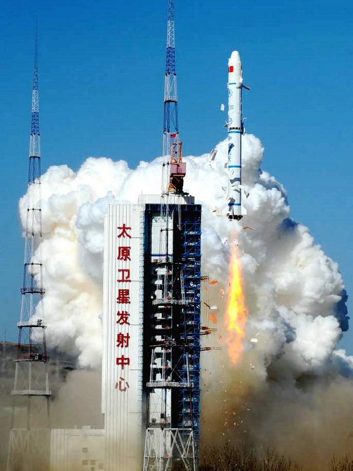
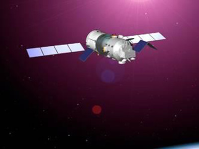
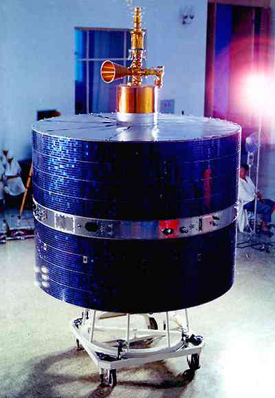
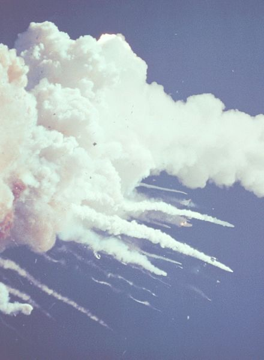
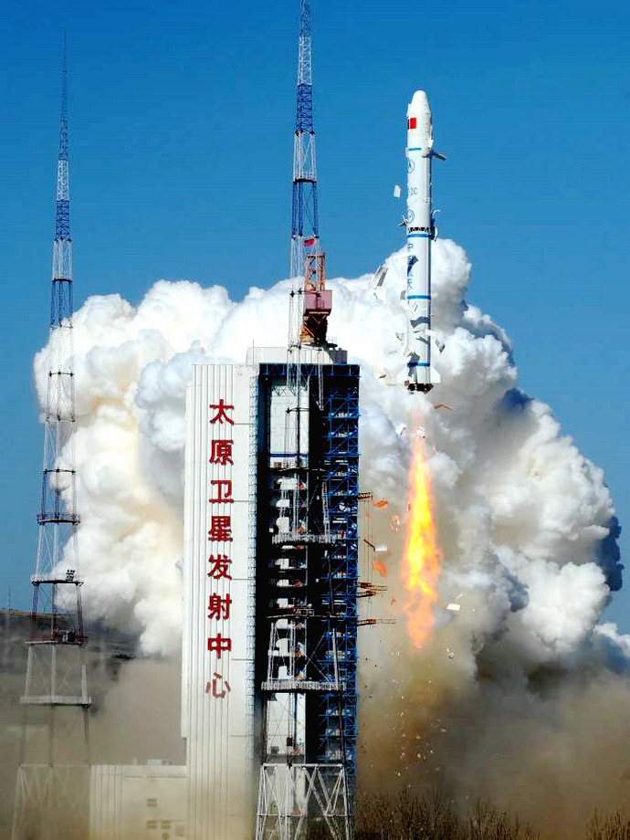
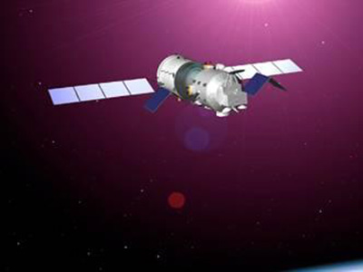
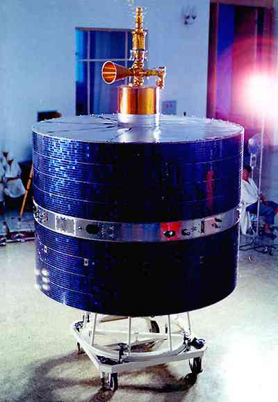
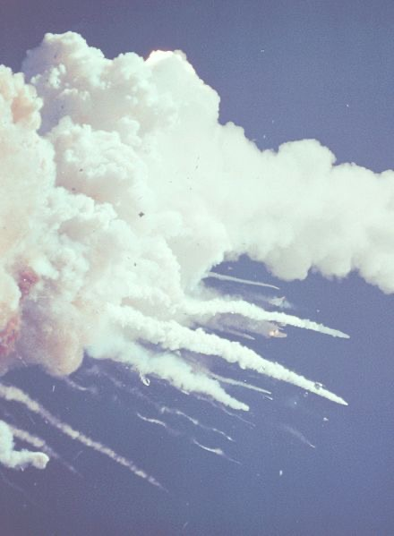
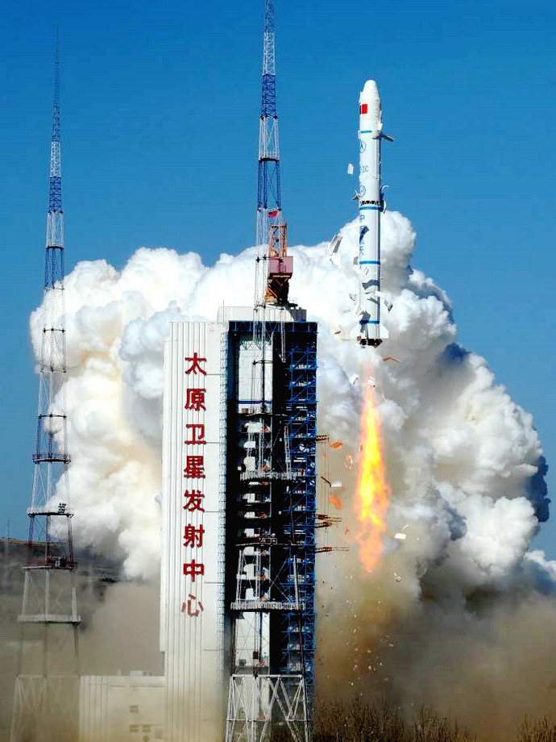
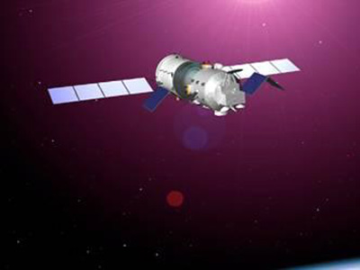